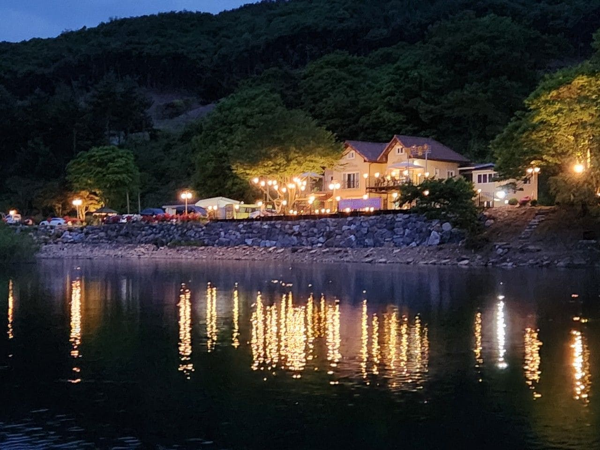

자연 풍경을 가까이에서 느낄 수 있는 단독형 펜션입니다. 가족 모임, 친구 모임, 소규모 행사까지 여유 있게 이용할 수 있습니다.

펜션 내 카페 공간에서 핸드드립 커피와 간단한 디저트를 즐길 수 있습니다. 풍경을 보며 쉬어갈 수 있는 조용한 휴식 공간을 지향합니다.
계절에 따라 메뉴를 조정할 수 있고, 시그니처 세트와 따뜻한 분위기를 함께 전달할 수 있도록 구성했습니다.
예약 및 문의사항은 아래 연락처로 연락주시길 바랍니다.
주소
충남 논산시 벌곡면 수락계곡길 232-55
전화번호
010-7400-1321
예약 문의
전화 또는 예약 링크를 통해 접수
체크인 / 체크아웃
15:00 / 11:00
자가용 이용
대중교통 이용
for host only
예약 현황을 확인하고 예약확정 또는 예약취소로 객실 상태를 변경할 수 있습니다.